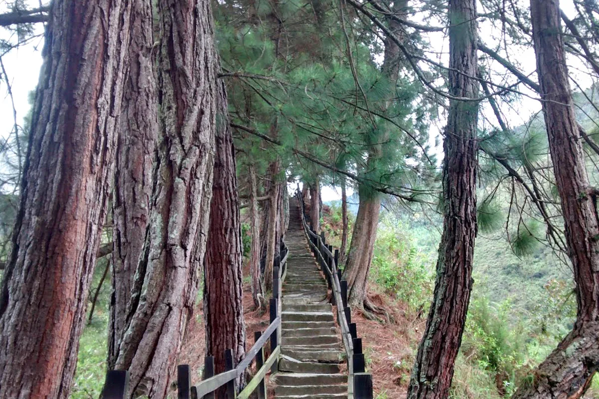
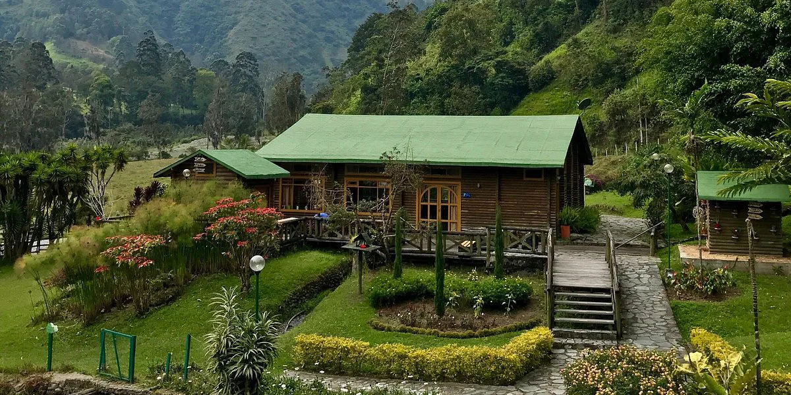
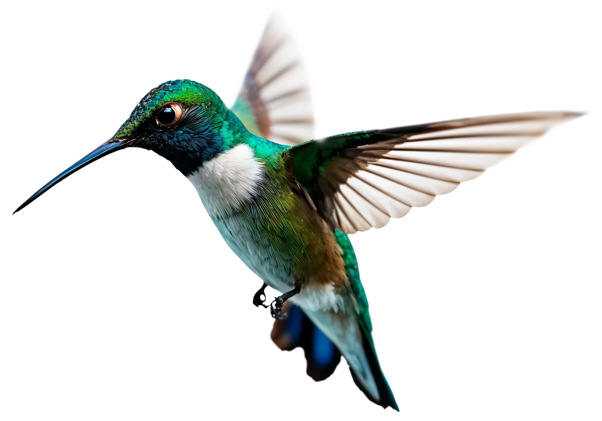
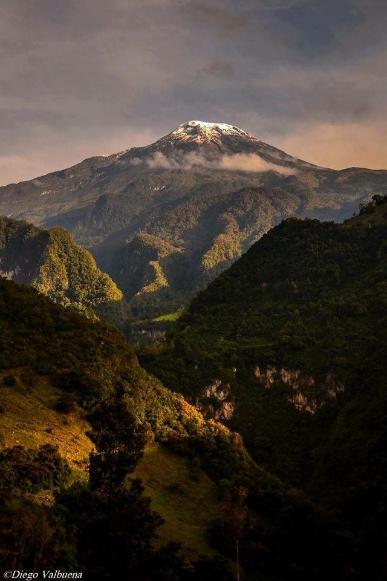
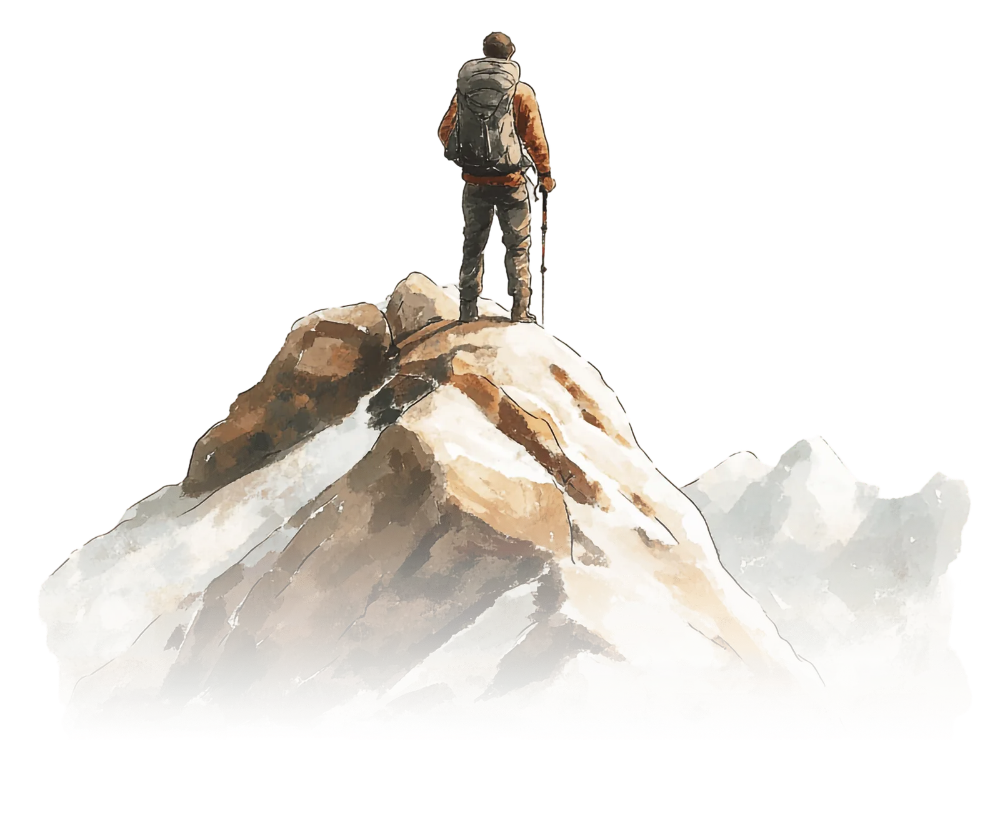

Nuestra Esencia

Nuestra Esencia
Protegemos y compartimos los paisajes naturales de Ibagué, fomentando un turismo consciente y sostenible.
EcoTour

EcoTour · Sur del Nevado
El valle que despierta al río


Cordillera Central · Colombia
Senderos y aguas · Ibagué
Cuatro caminos para entrar al páramo, sentir el vapor de las aguas termales y perder la vista desde lo alto del cerro — cada uno con su propia luz.
Planifica tu visita
Ibagué está a tres horas de Bogotá por la ruta al Tolima.
